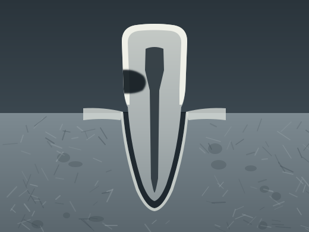

Imagens interativas
Explore regiões clicáveis nas imagens e leia a descrição de cada estrutura ou achado.
Uma experiência interativa para aprender a reconhecer estruturas anatômicas, identificar alterações radiográficas e desenvolver o raciocínio diagnóstico em Endodontia.
O ImagiEndo aproxima a interpretação radiográfica do raciocínio diagnóstico, com conteúdo científico organizado, prática guiada e apoio à consulta de fontes.
Explore regiões clicáveis nas imagens e leia a descrição de cada estrutura ou achado.
Textos e referências estruturados em eixos temáticos, com a fonte sempre indicada.
Do reconhecimento da normalidade à decisão diagnóstica, em um percurso claro e progressivo.
Cada etapa é liberada ao explorar a maior parte da anterior, construindo o raciocínio passo a passo.
Reconhecer as estruturas anatômicas normais do dente e de seus tecidos de suporte na radiografia periapical.
Regiões clicáveisIdentificar alterações radiográficas de interesse endodôntico e compará-las com a normalidade.
Comparação visualIntegrar queixa, testes clínicos e achados de imagem seguindo o fluxograma, com casos para praticar.
Fluxograma e casosAlterne entre exemplos e observe como cada achado aparece na imagem. Dentro da plataforma, cada região é clicável e traz sua descrição.

Área radiolúcida na coroa que se aproxima da câmara pulpar. Ajuda a avaliar a proximidade com a polpa.
Ilustração esquemática para fins didáticos. Não é uma radiografia clínica real.A tutora usa busca semântica para localizar, na base de conhecimento da pesquisadora, os trechos mais próximos da sua dúvida e mostra a referência de cada um.
A plataforma reúne a trilha de estudo, a prática com casos e as fontes de consulta, com identificação anônima por código.
Identificação por código individual, sem nome, matrícula ou e-mail. Visitantes podem explorar sem registro de atividades.
Acesse o ambiente de aprendizagem e percorra as três etapas no seu ritmo.
Explorar plataforma